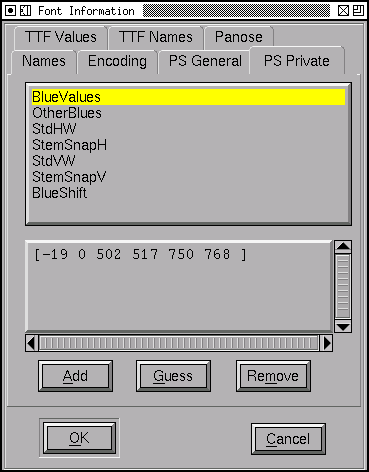
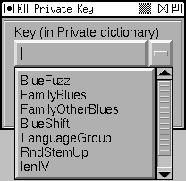
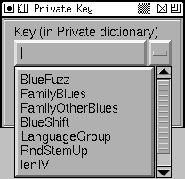
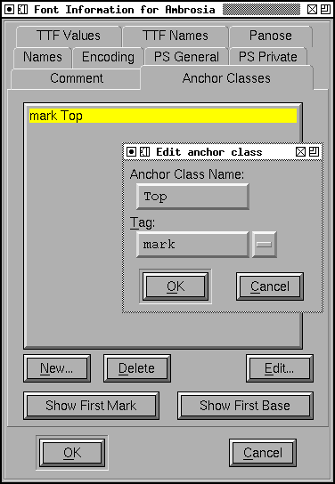
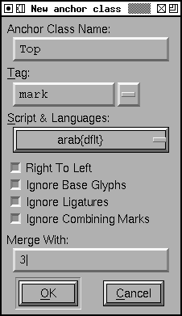

The Font Info dialog is available from all views. It allows you to name your font, to set its encoding and various other useful bits of information. In a CID keyed font, there is a separate command to access the information for the font as a whole, the dialog looks the same. The dialog is composed of many different sub dialogs.
Postscript fonts have several different names, but basically there are two important ones: the family name (like Times) and the fontname (which is the family name with a bunch of modifiers like Bold Italic Condensed tacked on to the end. The FullName is designed to be read by humans, while the others are for machines, this name can contain spaces (like "New Century Schoolbook-Bold Condensed"). Finally there is the weight name. All of these names should be in ASCII. If you wish to enter names with characters outside this range look at the TTF Names Section.
The copyright field can contain whatever you want to put there, but it's a good place to put a copyright.
In most fonts the version field is a string (and so has minimal constraints on it), but in CID keyed fonts it must be a floating point number.
Many of these names are similar to the english names of the TTF Names section.
If nothing is specified in that section then the names specified here will
be used by default in ttf files.
This sub dialog allows you to specify the encoding for your font, and to teach FontForge about new encodings.
There are two ways to change the encoding. The default assumes that the font currently has a reasonable encoding, but you want it to have a different one, here each character will be moved to the appropriate position in the new font. However if you check the [ ] Force Encoding box, then FontForge will assume that the characters are in the right order, but have got the wrong names. It will go through and rename every character to match what it should be in the new encoding (this is for cases where people have given a font an inappropriate encoding but where the mapping from character code to glyph is correct).
You may want to add characters to or removed characters from your font. You can specify how many characters you want in the font here.
Note some encodings have different numbers of characters, and it may be hard to guess how many will be used. But if you have changed the encoding but not altered the "Number of Characters" box, then the value in the Number box will be ignored and the correct number will come from the encoding process.
In a CID keyed font you are not allowed to change the encoding (in essence because there is none), but the dialog will show you the Registry/Ordering/Supplement for this font.
Not all font formats support all encodings. SVG fonts will always be output in a unicode encoding, truetype fonts in either unicode or one of the CJK encodings, type1 fonts only support single byte encodings, etc.
Sadly the encoding is not always sufficient for understanding the font's behavior. For example a unicode font designed for a chinese system will look very different from a unicode font for a japanese system (The same unicode character may map to very different chinese or japanese glyphs). To handle this (and some other cases) FontForge has the concept of "Interpretation". There are several cases in which this field is useful.
FontForge knows about the following encodings by default:
 ISO-8859-9
(Latin5) -- Turkish
ISO-8859-9
(Latin5) -- Turkish
Encoding sources:
An index to images of all the glyphs in unicode.
You can also use the font info dialog to add new encodings to the set that FontForge knows about. There are three buttons that manipulate a set of user defined encodings. As always these specify both a character set and an encoding. The encoding has a maximum of 256 entries, but the character set may be larger (up to 1024). This means that you can define a font with extra characters. Since postscript fonts can be reencoded at runtime this can be useful.
The button [Load] allows you to load an encoding(s) from a file.
Currently the file must either be in the format used by the unicode consortium
for mapping ISO
8859 encodings to unicode, or it must be a postscript encoding array.
The first format looks like this:
0x20 0x0020 # SPACE 0x21 0x0021 # EXCLAMATION MARK ...
A postscript file looks like:
/TeXBase1Encoding [ % 00 /.notdef /dotaccent /fi /fl /fraction /hungarianumlaut /Lslash /lslash ... ] def
There may be more than one encoding in a postscript file. The encoding parser is not smart. It will only read arrays specified like this, don't try any of the innumerable other ways of specifying an array in postscript.
If the font has a custom encoding then the [Make From Font]
button is enabled. This allows you to name the encoding you have defined
for the current font.
The [Remove] button brings up a list showing all the custom
encodings and allows you to delete them.
Here's an example of a postscript encoding file. It contains:
This sub dialog contains a rather random collection of settings.
The Ascent and Descent are (in this current definition) Macintosh concepts rather than Postscript, their sum, however, provides the size of the em-square and that is very much a postscript concept. For postscript fonts this number is set by strong convention to be 1000, while in most TrueType fonts it will be 2048 (also a convention, but TrueType claims rasterization is faster if the sum is a power of 2). Since both TrueType and Type1 (postscript) fonts represent numbers as 16-bit integers ascent and descent must be less than 32767. TrueType is more restrictive and requires their sum to be less than 16384.
If you change the size of the Em you may choose to have all the outlines (and kerning info) scaled to have the same proportion to the new value that they had to the old.
The Italic Angle indicates the slant of the font. FontForge can attempt to guess a good value for you by looking at the stems of certain letters ("I" for instance).
The underline position and height provide a program using this font a hint as to where it should place a line if it wants to underline text printed in this font.
The XUID field is a collection of numbers separated by spaces and enclosed in brackets. This allows you to specify the extended unique ID of the font. If you have set the XUID preference entry then FontForge will assign values to all new fonts (by appending a number unique to this font to the end of your preference item). Adobe recommends that the XUID be changed every time the font is changed, so each time you generate a postscript font, that font's XUID (if present) will be incremented by 1 (This incrementing does not happen in CID-keyed fonts, where the XUID behavior is too complex for this simple trick). (The XUID field is only meaningful in PostScript fonts)
The UniqueID field is an older convention for the same purpose as XUID. If you do not fill in this field then FontForge will pick a random number for you in the allowable range. If you want your font to have no unique id then give this the value of -1. If you have talked to Adobe and been assigned a real UniqueID then you may use this field, otherwise leave it blank. (The UniqueID field is only meaningful in PostScript fonts)
If you want your font to have vertical metrics (generally
this means you are working on a CJK font) then check the [*] Has Vertical
Metrics checkbox. This will enable the Vertical Origin field, and
will mean that when you generate a truetype or opentype font a vertical metrics
table will be added. The Vertical Origin is the vertical offset from the
origin of the design coordinate system to the origin for the purposes of
vertical metrics.
If you check [*] Quadratic Splines then FontForge will use quadratic
Bézier splines for this font rather
than cubic Béziers, this means that FontForge will be using the native
spline format of truetype rather than postscript (or opentype). When FontForge
generates a font it will convert from whatever format is used internally
to whatever format is required for the font, so there will be no problem
if this is set incorrectly, but setting it correctly for your font means
you get a clearer idea of what the outlines will look like. I find quadratic
splines harder to edit with because each spline is less flexible (and a number
of FontForge's commands will not work on them), but the advantage of actually
seeing what your truetype font will look like may outweigh that.
If you have configured FontForge for multi-layered
editing there will also be a checkbox here to turn that on.
This sub-dialog shows most entries in the font's Private dictionary. The interesting things in this dictionary are mostly concerned with hints appropriate for the entire font. I shall not go into detail about the meanings of the various entries, that is best understood by reading Adobe's Type1 specification.
Don't try to change these until you understand what they mean.
The dialog is shown at right. It consists of a list, an editable region and a series of buttons. The list gives the names (keys) of the dictionary entries, while the editable region displays the value of the currently selected entry. To change an entry, simply select its key and then modify the value below.
For example the BlueValues entry specifies certain key regions
of the font in a vertical direction. For instance it might contain the baseline
serif, the x-height serif, the cap-height serif. It is expressed as an array
of numbers, grouped in pairs. The first number of a pair is the low end of
the region and the second is the high end. So in the example at right, the
value of BlueValues is [-20 0 437 457 583 603 623
643.
When the [Guess] button is enabled FontForge thinks it can make
a reasonable guess for the value of the currently selected entry. Often two
entries in the dictionary will be closely linked and guessing at one will
also guess at the value of the other (FontForge will warn you of this). In
this case if FontForge were to guess the value of BlueValues
it would also guess the value of OtherBlues.
The [Hist] button is similar, it will bring up a dialog showing a histogram of the values of an attribute of the font. The hope is that this will allow you to pick a good value for the entry.
You may also delete an entry from the dictionary with the [Remove]
button. Some entries (such as BlueValues) are required
to be present in any type1 font, but you may still delete them. FontForge
will simply guess at a reasonable value when it needs to generate the
font.
 The
The [Add] button allows
you to add new keys to the dictionary. Every key will be added with a blank
value, and you will almost certainly need to provide an appropriate value
for it. When you press [Add] a dialog pops up which allows you
to enter the key's name. There is a pull down list of known keys (that aren't
already in the dictionary), or you may add keys by typing them in.
Certain keys affect things other than hints. The lenIV entry
controls how much random padding is placed around the type1 strings when
the font is generated. Normally this will be 4, but if you want to save space
(4 bytes per character in pfb format, 8 bytes in pfa) you may choose another
value. The UniqueID key represents the font's Unique postscript ID. If you
provide a value here then FontForge will copy it into the UniqueID field
in the Font Dictionary. If you do not provide a UniqueID here, FontForge
will generate a random one itself (this is different from True Type's UniqueID.
They perform the same function but are formatted differently).
These entries are only meaningful for PostScript fonts.
This sub dialog contains a few settings important on Windows platforms.
The weight class provides a numeric value describing the boldness of the font. A normal face will usually have a boldness of 400, and a bold face will usually be 700. This must be a number between 100 and 900.
The width class allows you to provide a numeric value saying how condensed or expanded this font is.
The PFM Family is used when generating PFM files and classifies the font into some rather broad categories (Serif, Sans, Monospace, Script, Decorative).
You can control whether you want to allow your font to be embedded into other documents (most commonly pdf). You can restrict it so that it can never be embedded, it can be embedded into documents that can be printed (but not edited), it can be embedded into documents that can be edited, or it can be embedded into an editable document and later extracted and installed on a different system. You can also control whether the document producer is allowed to extract the characters it needs and make a new font from them (which saves space) or whether they must include the entire font if they use any of it. Finally you can restrict the embedding so that only bitmap versions of the font may be embedded. (meaningful in CID keyed postscript fonts as well as TTF and OTF).
The Windows Ascent and Descent fields are badly defined in the OpenType spec, which says that they should express the maximum range of the Windows "ANSI" glyphs. If one uses this definition, non-"ANSI" glyphs are cropped. These should be the maximum range of all glyphs to avoid cropping. But even that will not always work. If you have a line with marks which are repositioned with GPOS, then the marks may be cropped, so Windows Ascent should include the repositioned marks.
This is too complex (and too ill defined) for FontForge to figure out, instead FontForge gives you a couple of options.
Both WinAscent and WinDescent should be positive numbers.
You can also specify the default line gap, or leading between lines.
And if your font has vertical metrics enabled (See General above) you will be able to set the default spacing between vertical columns of text. (the equivalent to LineGap in vertical text).
These entries are only meaningful in TrueType and OpenType fonts (though
the Embeddable entry (generally called FSType) will be set on CID keyed fonts
even if they are not in an OpenType wrapper.
 GSUB/morx
GSUB/morx
This dialog allows you to control the order features in which are to be executed
by the word processing program. If you have loaded an opentype or truetype
font then the original order will be maintained. As you add more features
they will appear at the bottom of the list (which may not be appropriate).
You may select a feature name and use the buttons to move it up and down
in the list. Things at the top of the list are executed first, things at
the bottom last.
TrueType (and OpenType) fonts are allowed to have different names in different languages. So a French user might see CaslonItalic displayed as CaslonItalique in a font menu, while a German user might see CaslonKursive. There are about 20 different strings which may be customized into various different languages. Customizing one string does not mean that you must customize the others (indeed, usually only the Style string is customized).
If you don't include any values here when FontForge saves a font as truetype it will create an entry with an American English language containing the postscript versions of the strings.
The various strings and a brief description of their meanings are:
These are described in the original true type docs, but they apply to open type as well.
These settings specify strings for the windows platform. If you specify [] Apple Mode when generating the font it will also generate equivalent entries for the mac (It will, always, generate two additional string sets by taking the american english entries and creating a "Macintosh English" and an "Apple Unicode (2.0)" set even if you don't specify [] Apple Mode).
Generally fonts will have a fairly complete set of strings in the American English entry, with the Style string (and nothing else) translated into different languages.
| English | Regular | Bold | Demi-Bold | Light | Medium | Book | Black | Italic | Oblique | Condensed | Expanded | Outline |
|---|---|---|---|---|---|---|---|---|---|---|---|---|
| French | Normal | Gras | Demi-Gras | Maigre | Normal | Extra-Gras | Italique | Oblique | Étroite | Large | Contour | |
| Spanish | Normal | Negrita | Fina | Supernegra | Cursiva | Condensada | Ampliada | |||||
| Italian | Normale | Nero | Neretto | Chiaro | Medio | Libro | ExtraNero | Corsivo | Obliquo | Condensato | Allargato | |
| German | Standard | Fett | Halbfett | mager | mittel normal |
Buchschrift | Schwarz | Kursiv | schräg | schmal | breit | Kontur |
| Dutch | Regelmatig | Vet | Licht | Extra vet | Cursief | Smal | Breed | |||||
| Swedish | Mager | Fet | Extrafin | Extrafet | Kursiv | Smal | Bred | |||||
| Norwegian | Vanlig | Halvfet | Mager | Fet | Kursiv | Smal | Sperret | |||||
| Hungarian | Normàl | Kövér | FélkövérKövér | Világos | Közepes | Sötétes | Fekete | Do"lt | Döntött | Keskeny | Széles | Kontúros |
| Russian (koi8r) |
ÖÉÒÎÙÊ | ÐÏÌÕÖÉÒÎÙÊ | ó×ÅÔÌÙÊ | ëÕÒÓÉ×ÎÙÊ | îÁËÌÏÎÎÙÊ | óÖÁÔÙÊ | ûÉÒÏËÉÊ |
(Any help in expanding/correcting the above table would be greatly appreciated pfaedit@users.sourceforge.net)
When you are setting the Style string in American English another button appears in the dialog, labelled "Translate Style". If you press this button then FontForge will attempt to figure out the style of the font and then attempt to translate it into whatever other languages in knows about (essentially the above table). It will only translate to a language for which it knows all the components and for which you have not already provided a translation. So if your style in American English is "BoldItalic" (and you have no other style entries) then after you press the "Translate Style" button FontForge will generate "GrasItalique" for French, "FettKursiv" for German, "ÖÉÒÎÙÊëÕÒÓÉ×ÎÙÊ" for Russian and "NigritaCursiva" for Spanish.
These names are only meaningful for TrueType and OpenType fonts.
This sub-dialog allows you to describe your font in 10 different dimensions. The exact meanings of many of these entries are not clear to me, I have merely typed them in as specified in the true type docs. Better information is available from HP, AGFA and MS.
These entries are only meaningful for TrueType, OpenType and SVG
fonts.
This allows you to set the TeX font parameters (which are described in Appendix F, pp 98-100 of the MetaFont Book). There seem to be 3 different types of font parameters, those for text fonts, those for math fonts and those for math extension fonts. The later two have additional parameters which are accessible through the [More Params] button. The default values for the Math parameters are probably reasonable. The default values for the Math Extension parameters are probably unreasonable.
These values are stored in tfm files (should you generate a tfm file with
your font).
This allows you to keep track of arbitrary comments inside your font database. It does not correspond to any postscript or truetype entity. It is intended to store a changelog for the font itself, but could be used for other purposes...
Various font formats allow a random comment to be place in the font, but no format makes use of it. This is primarily to be used inside FontForge. The comment should be in ISO Latin1.
 This sub-dialog allows you to control the Anchor Classes used in your font. Anchor classes need a name and a tag. Generally you want to use the default tag of 'mark' (but see the discussion in the overview of when you might not).
From here you may add new classes, delete old ones or rename old ones. You may also bring up outline character views looking at the characters which use these classes.
The dialog for creating a new (or modifying an old) anchor class allows you to give that class a name and requires that you associate it with a set of scripts and languages. You may also set some standard OTF flags.
There are three different types of anchor classes (well there are four, but FontForge doesn't need to distinguish between two of them), Mark to Base, Mark to Mark and Cursive. When you create an anchor class you must select which type it will be.
Generally in OpenType fonts several Anchor Classes will be treated as one unit if they refer to approximately the same set of base characters and have non-overlapping marks An example: there could be two types of marks that attach to the same set of letters, one attaching below and one above the letter, each would have its own anchor class, but you would tell FontForge to associate the two together by having them "Merge With" each other.
FontForge recognizes a special feature tag ' RQD' to indicate that this feature is required for the given script/language. Such a feature will always be applied.
Anchor classes are only meaningful when generating a truetype (ttf or otf)
like font with OpenType tables.
This sub-dialog allows you to create and remove contextual substitutions and position features in your font.
For a description of what a contextual feature might be see here
This dialog allows you to create a new contextual feature by pressing the [New] button. This is a two part operation, first you will be prompted for the standard tag, script&language combination, and flags, then (in a separate dialog) you will be prompted for the contents of the feature.
The [Edit] button will allow you to change the tags, script and flags (it corresponds to the first part of [New]) and the [Edit Data] button allows you to change the contents of the feature.
Contextual/chaining tables are only meaningful when generating a truetype
(ttf or otf) like font with OpenType tables (in a few cases they can be converted
into Apple Advanced Typography tables too).
This sub-dialog allows you to set the mac style of your font. Normally FontForge will be able to guess the style from the fontname (and various other clues), but sometimes the name will be non-standard (or perhaps just in a language FontForge doesn't know about), and other times you may wish to override this default setting.
If you are happy with the default, just leave the Automatic button checked, if you wish to override check the button next to the list box. You may select any combination of styles (remember to hold down the control key to get multiple selections) except for one containing both "Condense" and "Expand".
Note: If you want the style to be "Regular" then leave all styles unselected.
The mac style is stored in the header of an sfnt (truetype or opentype font file), but is most important in creating mac font families.
The FOND name is only used for generating mac families.
It is a grouping level underneath the family level. See the
FAQ for a discussion on when to use
this.
This sub-dialog allows you to create and remove Mac features from your font.
This will override the Mac features specified in the
preferences dialog for this particular font
(for example to give a more appropriate but local name to a certain feature
setting).
This sub-dialog allows you to create and remove Apple's state machines from your font. These have some similarities to Contextual/Chaining substitutions (see the previous section).
For a description of what a state machine might look like see here.
These state machines are only meaningful when generating a truetype or opentype
font with the Apple option set in the Options dialog.
See Also: